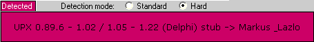
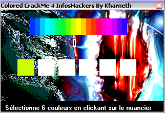
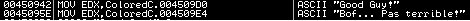
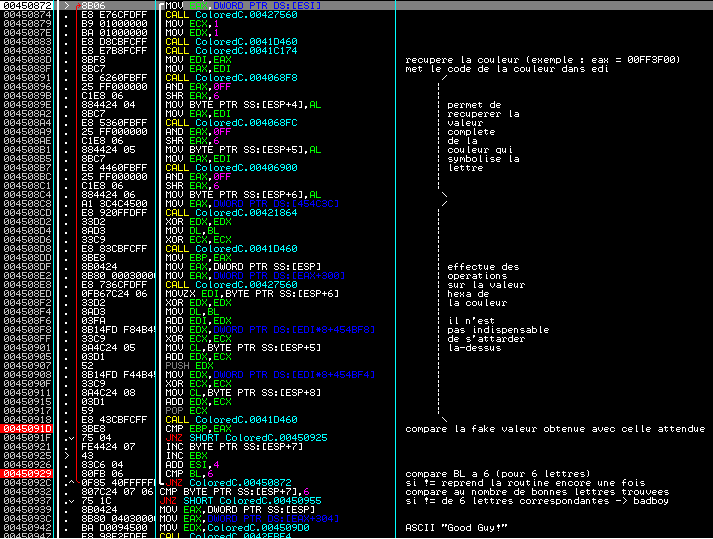

ColoredCrackMe_color de Kharneth - Solution par elooo

| Niveau | Outils | Auteur |
|---|---|---|
| Newbie avancé | Ollydbg 1.9d - StudPE | elooo |
Familiarisation avec le crackme
Tout d'abord, si on ouvre ce crackme dans StudPE, on constate qu'il est packé avec UPX.

L'unpacking manuel d'UPX est particulièrement simple, cependant je n'expliquerai pas la démarche dans ce tutorial.
Telechargez une version d'upx et effectuez en ligne de commande un upx -d nom_du_fichier
dans une console dos ou pour les moins doués, procurez-vous une GUI pour UPX facilement
trouvable sur google (Il faut savoir qu'UPX n'est pas un packer voué à protéger
son executable du debugage à la base, mais plutôt un compresseur d'exe).
Une fois le crackme décompressé, interessons-nous de plus près à ce crackme.
Si on l'execute, on tombe sur une fenêtre similaire à celle-ci :

On constate qu'on nous demande de générer une série de 6 couleurs sélectionnables par clics avec la souris sur le nuancier. Chaque couleur symbolise une lettre comprise entre A et S.
Etude de la routine
Ouvrons cette fois le crackme décompressé dans Ollydbg, et allons voir en premier lieu si Les Data String Reference peuvent nous
orienter vers une partie interessante du code.
On peut voir par exemple :

Donc on double-clique sur Good Guy !. On remonte un peu et on voit un jnz
en 00450937 qui jump vers badboy si la comparaison juste au-dessus n'est pas vérifiée.
Si on remonte encore un peu, on voit une longue boucle, qui semble à première vue
correspondre à une routine de vérification du pass.
Essayons de commenter un peu cette partie du code :

En 0045091D, on voit qu'on peut récupérer facilement les valeurs attendues pour
le pass. A chaque passage dans la boucle, une nouvelle valeur attendue est stocké dans ebp
et est comparée à notre fake valeur contenue dans eax.
On va donc poser un bp en 0045091D, puis avec F9 faire breaker 6 fois, tout en prenant soin
de relever les valeurs stockées dans ebp.
On obtient :
1ere lettre -> 001969FD
2eme lettre -> 00A579AE
3eme lettre -> 00FFFFA7
4eme lettre -> 00E4AB1C
5eme lettre -> 00B893E1
6eme lettre -> 00F2C52A
Ok, maintenant voyons voir à quelle valeur correspond chacune des lettres de
A à S. La méthode est similaire, sauf que cette fois on récupère
ce qui est stocké dans eax et ceci en fonction de la position de la lettre dans le fake serial rentré.
Afin d'avoir toutes les possibilités on testera avec ces fake pass :
- ABCDEF
- GHIJKL
- MNOPQR
- SABCDE
- FGHIJK
- LMNOPQ
- RSABCD
- EFGHIJ
- KLMNOP
- QRSABC
- DEFGHI
- JKLMNO
- PQRSAB
- CDEFGH
- IJKLMN
- OPQRSA
- BCDEFG
- HIJKLM
- NOPQRS
On est ensuite en mesure de constituer un tableau afin d'y voir plus clair.
| Lettres | Position 1 | Position 2 | Position 3 | Position 4 | Position 5 | Position 6 |
|---|---|---|---|---|---|---|
| A | 001969FD | 00F0D6EB | 00FFFA68 | 006E91E9 | 00B893E1 | 002E2261 |
| B | 000165CF | 00A579A5 | 00FCE546 | 00272196 | 0026163D | 003E2E6D |
| C | 00043AFF | 00A579AE | 00F6C52A | 006B2D3D | 004F2D4C | 004E3E7A |
| D | 000025FE | 00A57AAC | 00E4AB1C | 00BF6429 | 00994E36 | 00654F92 |
| E | 00B0D0A5 | 000025FE | 00A57AAC | 00E4AB1C | 00BF6429 | 00994E36 |
| F | 00C47210 | 00B0D0A5 | 000025FE | 00A57AAC | 00E4AB1C | 00BF6429 |
| G | 0004009A | 00C47210 | 00B0D0A5 | 000025FE | 00A57AAC | 00E4AB1C |
| H | 00000174 | 00B56F12 | 00B3D4AE | 00206FFF | 00956FA5 | 00FDE13A |
| I | 0006014B | 00BB7C1B | 00A4C193 | 004099FA | 008B639F | 00FDFF5F |
| J | 0001004A | 00EBB039 | 007F9661 | 003E9CFB | 007D5B8A | 00FBFF74 |
| K | 00030259 | 00F9BB41 | 007F9863 | 004FB0FC | 007D5A93 | 00FFFF68 |
| L | 00030172 | 00E19B35 | 0098B384 | 0061CAFF | 007E5C9E | 00FAEB48 |
| M | 00000098 | 00925D1E | 00AECFA5 | 0079E9FF | 009E71AF | 00F2C52A |
| N | 00925D1E | 00AECFA5 | 0079E9FF | 009E71AF | 00F2C52A | 0082A9F2 |
| 0 | 00AECFA5 | 0079E9FF | 009E71AF | 00F2C52A | 0082A9F2 | 00EFCABD |
| P | 0079E9FF | 009E71AF | 00F2C52A | 0082A9F2 | 00EFCABD | 00DCCEF0 |
| Q | 006DDAFD | 00AF88B4 | 00FFFE6E | 00B1EAFB | 00A87471 | 006B52A2 |
| R | 0045A0FF | 00CCA7C6 | 00FFFFA7 | 00CCFFFF | 007E5363 | 00402D73 |
| S | 001969FD | 00F0D6EB | 00FFFA68 | 006E91E9 | 00B893E1 | 002E2261 |
Résolution du crackme
On met en évidence dans le tableau les valeurs attendues aux bons emplacements (représentées en gras ci-dessus). Il devient maintenant très facile d'énoncer les différentes solutions possibles :
SCRESM
ou SCREAM
ou ACRESM
ou ACREAM
Je ne me suis pas cassée la tête pour ce tutorial. J'espère simplement avoir été suffisamment explicite pour que vous ayez pu me suivre.